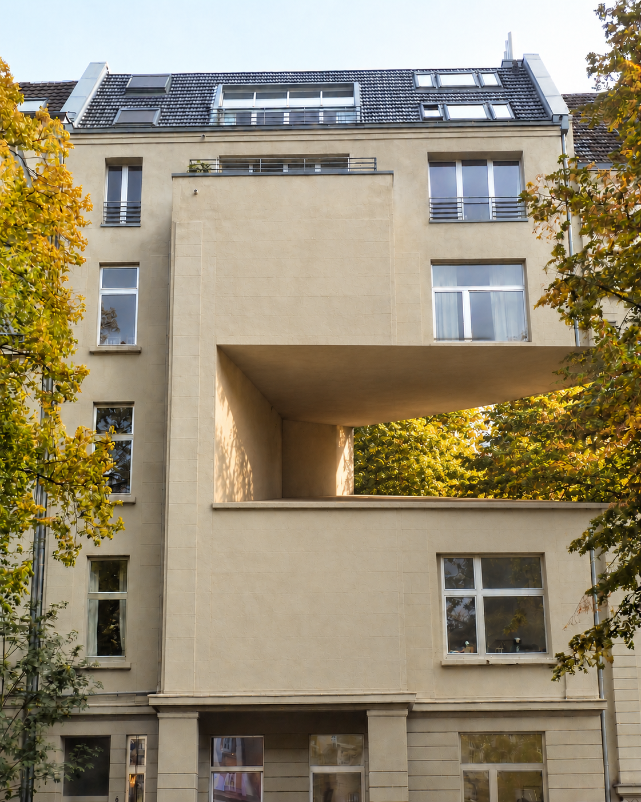

Room Turns Sideways
The wall opens into a long, low room. The trees remain at its far edge, and the building's small windows hold their measure around this new passage. The sideways turn gives the canopy a place inside the façade without replacing the real opening below it.

Source photograph: Superbass, Denkmal-Koeln-8121-Merlostr-4.jpg, via Wikimedia Commons, licensed CC BY-SA 3.0. The façade and openings were altered in this adaptation.